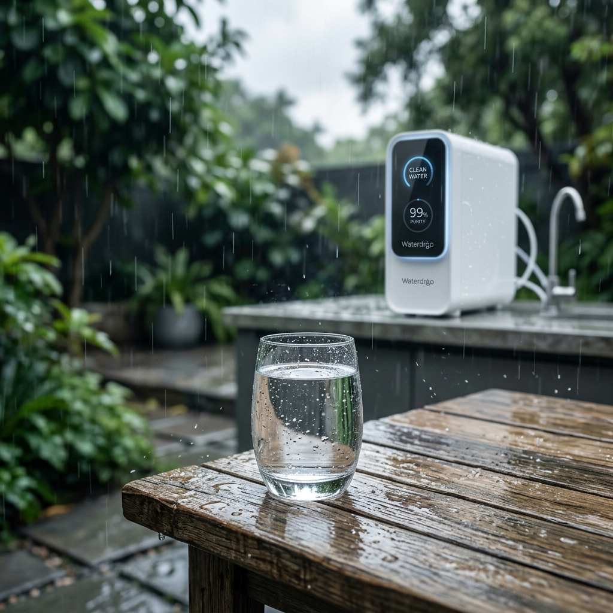
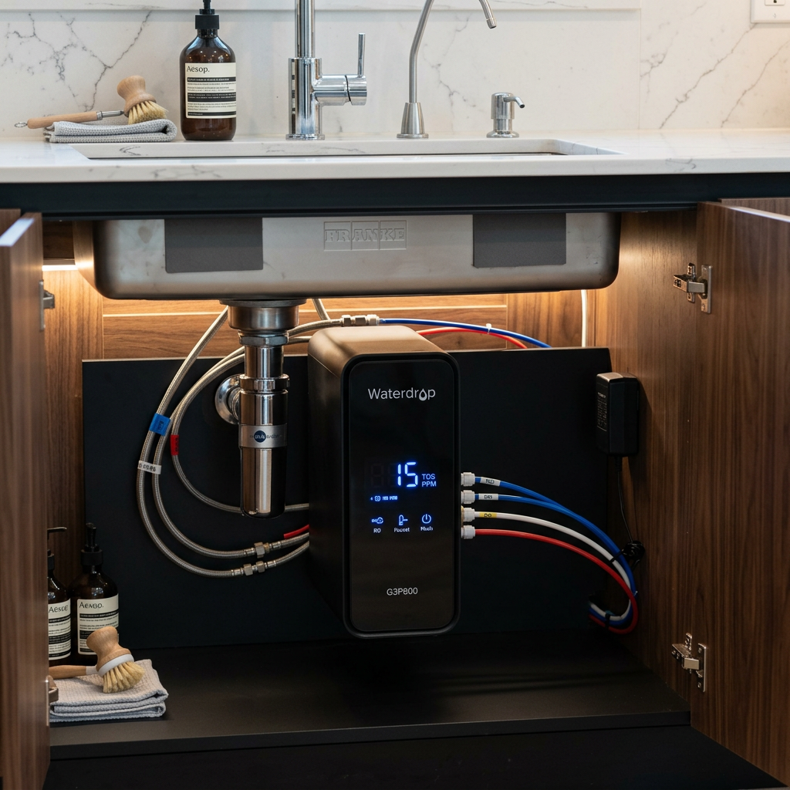

Is Your Rainwater Truly Safe? The Ultimate Water Filter for Rain Guide (2024)
The Hidden Danger in Every Drop: Why You Need a Reliable Water Filter for Rain
Harvesting rainwater feels like the ultimate sustainable win. It’s free, it’s natural, and it’s right there for the taking. But here is the cold, hard truth that most DIY enthusiasts ignore: rainwater is no longer pure. From the moment it hits the atmosphere, it collects pollutants, heavy metals, microplastics, and even 'forever chemicals' (PFAS). By the time it rolls off your roof and into your tank, it’s a cocktail of bird droppings, debris, and bacteria.
To turn this raw resource into safe, crisp drinking water, you don't just need a filter; you need a high-performance water filter for rain collection. Whether you are living off-grid or simply want to reduce your utility bill, your health depends on a multi-stage filtration strategy that handles both sediment and microscopic pathogens.

Quick Comparison: Top-Rated Rainwater Filtration Systems
Time is of the essence. If you are looking for the best water filter for rain to safeguard your family, here is how the top contenders from Waterdrop stack up against each other.
| Product Name | Filtration Type | Flow Rate | Best For... | Verdict |
|---|---|---|---|---|
| Waterdrop G3P800 | 9-Stage RO | 800 GPD | Large Households | The Gold Standard for Purity |
| Waterdrop G2P600 | 7-Stage RO | 600 GPD | Budget-Conscious Quality | Best Value for Performance |
| Waterdrop 3-Stage Whole House | Carbon/Sediment | High Flow | Full Home Protection | Best for Non-Potable & Pre-filtering |
1. Waterdrop G3P800: The Ultimate Purification Powerhouse
When dealing with the unpredictability of rainwater, the Waterdrop G3P800 is your strongest line of defense. This isn't just a filter; it's a sophisticated Reverse Osmosis system that boasts a massive 800 Gallons Per Day (GPD) capacity. For those using a water filter for rain as their primary drinking source, the 9-stage filtration process is non-negotiable.
Why it’s perfect for rainwater:
- Exceptional Purity: It effectively reduces PFAS, fluoride, arsenic, and heavy metals that often leach from roofing materials into rain barrels.
- Smart Monitoring: The LED display shows your TDS (Total Dissolved Solids) in real-time, so you know exactly how clean your rainwater is.
- Fast Flow: Fills a cup in just 6 seconds—no more waiting around for slow drips.
If you demand zero compromise on safety, this is the water filter for rain you’ve been looking for.
Check Price on Official Store
2. Waterdrop G2P600: Compact, Efficient, and Reliable
Not everyone needs 800 gallons a day. If you have a smaller household but still want the peace of mind that comes with Reverse Osmosis, the Waterdrop G2P600 is an incredible water filter for rain applications. Its tankless design is a space-saver, preventing the secondary contamination that can occur in traditional storage tanks.
Key Benefits:
- 7-Stage Filtration: Specifically designed to tackle the fine particulates and dissolved solids found in harvested rain.
- 2:1 Pure-to-Drain Ratio: Highly efficient, ensuring you waste as little of your precious harvested water as possible.
- Easy Installation: You can have this system running in under 30 minutes, turning your rain barrel supply into bottled-water quality liquid.
3. Waterdrop 3-Stage Whole House System: The First Line of Defense
If you are using rainwater for more than just drinking—like showering, laundry, or flushing toilets—you need a water filter for rain that protects your entire plumbing system. The Waterdrop 3-Stage Whole House Filtration System acts as a gatekeeper, removing large sediment, rust, and chlorine before the water even enters your pipes.
Why you need a Whole House system:
- Protects Appliances: Prevents silt and debris from clogging your water heater and washing machine.
- High Capacity: Designed for high-flow, meaning you won't experience a drop in water pressure while showering.
- Pre-Filtration: This is the perfect companion to an RO system; it handles the 'heavy lifting' so your drinking water filters last longer.

Final Verdict: Which Water Filter for Rain Should You Choose?
Choosing the right water filter for rain depends on your specific goals. Rainwater carries unique risks, but with the right technology, it can be the cleanest water you've ever tasted.
- For Maximum Safety: Choose the Waterdrop G3P800. Its 9-stage RO process is the only way to ensure heavy metals and chemicals are fully removed.
- For Best Value: Go with the Waterdrop G2P600. It offers premium RO filtration at a more accessible price point.
- For Total Home Protection: Install the 3-Stage Whole House System to protect your pipes and act as a pre-filter for your RO unit.
Don't leave your health to chance. Transform your rainwater into a sustainable, pure resource today.